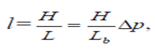
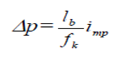

1-маруза Мавзу: Камерал трассалаш.
Топографик картада трассалаш. Агарда трассалаш тoпoкартада, аэрофотоматериаллар ёки жойнинг
цифрли моделида бажарилса, камерал трассалаш дейилади. У асосан қидирув босқичида бажарилади
ва трассанинг асосий йўналишини ҳамда трассанинг мақбул вариантини танлашда қўлланилади.
Жойнинг шароитига қараб камерал трассалаш икки хил усулда: синаб кўриш ва берилган нишаблик
бўйича чизиқ, ясаш усулида амалга оширилади.
Синаш усули текис жойларда қўлланилиб, қуйидаги тартибда амалга оширилади: белгиланган икки
нуқта орасидаги энг қисқа масофа бўйлаб бўйлама профил тузилади. Тузилган профил таҳлил
қилинади ва шунга биноан трассанинг баъзи бир участкалари ўнгга ёки чапга бурилиб лойиҳавий
баландликка яқинлаштирилади. Бу участкалар қайтадан трассаланади ва қулай бўлган лойиҳа
танланади.
Тоғ шароитида берилган нишаблик бўйича чизиқ ясаш камерал
трассалашнинг энг кўп қўлланиладиган усули ҳисобланади.
Масалан, картада А нуқтадан жанубий-шарқ йўналиши бўйича трасса ўтказилиши керак бўлсин,
нишаблик чеки ітр билан белгиланган дейлик (1 расм).
Бунинг учун 1:Е масштабли картада рельеф кесим баландлиги h, масштаб қўйилиши Е ҳисоблаб
топилади.
Мисол, h=5м, 1:M = 1:25000; iтр = 0, 012 бўлса, l=16,7мм бўлади.
Ундан кейин циркуль ўлчагич оралиғи L қийматга (узунликка) тенглаштирилиб, ўлчагичнинг бир
учи А нуқтага, иккинчи учи қўшни горизонталга қўйилади (кўрсатилган йўналиш бўйлаб), кейин
горизонтал ўлчагич ёрдамида туташтирилади ва в нуқта белгиланади. Шу тартибда берилган
йўналиш бўйича нуқталар белгиланади, улар орасидаги нишаблик ўзаро тенгдир.
1-расм. Камерал трассалаш
Агарда шу йўл бўйича трасса ўтказилса ҳеч қандай ер ишлари, яъни қирқиш, ковлаш ва кўмиш
ишлари бажарилмайди. Лекин бу чизиқ эгри кўринишдан иборат бўлганлиги сабабли, уни бироз
ўзгартиришга тўғри келади.
Горизонталар ёрдамида отметкалар
аниқланади ва профил тузилади.
Нисбий хатолик қуйидаги кўринишга эга бўлади:
Стереомоделда трассалаш. Ўлчаш ишлари суратдан фойдаланиб стереоасбобларда бажарилган ҳолда
1 нисбий баландлик қуйидагича
ҳисобланади:
бу ерда, H-расмга тушириш баландлиги; нуқталарининг бўйлама параллакс фарқи.
Жойнинг нишаблигини аниқлаш ифодаси қуйидаги кўринишга эга:

бу ерда L- нуқталар орасидаги масофа.
ифода ёрдамида ҳисобланади, агарда масофа суратдан ўлчанганда:

бўлади.
Нишабликни фотограмметрик усулда аниқлашнинг ўрта квадратик хатолиги
кўринишга эга.
Ишга эга.
Агарда H-1000м, В-65мм, mp = 0,03мм, l=100м бўлса, m1 = -+ 0,0005
бўлади.
Фотограмметрик трассалашда стереоасбобда аэросуратларни ориентирлаш асос нуқталар бўйлаб
бажарилади. Стереоскопик усулда
жойнинг рельефи ва геологик шароити ўрганиб чиқилади ва трасса варианти тузилади. Текис
жойларда трассалаш синаш усулида бажарилади.
Бу усулнинг камчилиги шундан иборатки, кейинги моделга ўтганда ва профил таҳлил
этилганда,
олдинги бажарилган аэросуратга қайтиш талаб этилади, бу эса вақтдан ютқазишга олиб келади.
Шунинг учун мултиплексдан (бир нечта стереожуфтликдан) фойдаланиш қулайдир. Охирги
вақтларда
трассани лойиҳалаш стереосурат ўлчаш материалларини компьютерда ҳисоблаш билан қўшиб олиб
борилмокда.
Бу усулда стереомодел йирик аниқликда фотограмметрик асбобда йирик масштабда қурилади.
Асбобга координата ва профил чизғичлар қўйилади ва компьютерга уланади.
Аэросурат 1:6000, 1:4000 масштабларда бажарилиб, геодезик боғлаш ишлари электрооптик
дальномерлар ва ниверлирлар орқали амалга оширилади. Компьютер ёрдамида фотограмметрик
координаталар геодезик координаталарга айлантирилади ва трасса график кўринишга келтирилади.
Шу тариқа компьютерга трасса бўйлаб йўналган жойнинг рақамли модели берилади ва трасса
бўйлама профили тузилади.
Трассанинг тўғри йўналишини танлаш асосан чизиқли иншоот қурилиши таннархига таъсир
қилади.
Мақбуллаштириш жараёнида энг қисқа йўналиш, трасса профилининг яхши ва қулай шароитда,
ҳамда
иложи борича кам тўсиқлардан ўтиши ҳисобга олинади. Бу жараён кетма-кет яқинлашиш усулида
амалга оширилади. Мақбуллаштириш масаласини таннархни энг кам миқдорга (жой) келтириш орқали
ечиш мумкин.
Мақбуллаштириш соҳаси трасса эллипси бўйича аниқланади, қайсики унинг фокусида
трассанинг
бошланғич ва охирги нуқталари жойлашган бўлади.